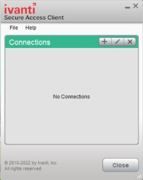
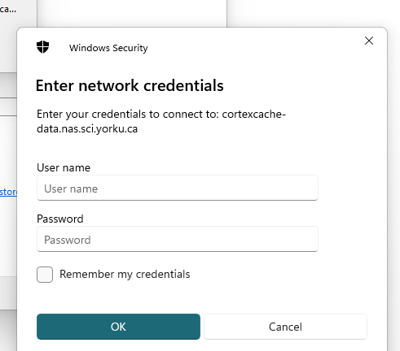

CortexCache reference
Detailed setup, connection management and troubleshooting for Michaels, Ma and Schall lab members.
Return to the access guideAccess and storage
You need a Passport York account with Duo, the cortex VPN profile (unless using a registered lab computer), and separate permission to the share or project folders.
- VPN access: email York UIT with your username, lab and supervisor. Request the CortexCache (cortex) SSLVPN profile. UIT arranges approval through your Faculty’s Executive Officer; you do not need to contact the officer yourself.
- File access: email Jonathan Michaels with your username, lab, supervisor and required project folders or lab share. Use the same route for additional access. Never email your password.
Michaels uses Michaels-Projects, with access assigned to named users for each project. Only authorized project folders appear. Ma and Schall use Ma-Group and Schall-Group with their existing per-user layout. The server expands %U; do not append it or your username to the share address.
Registering a lab computer
PIs and lab managers can ask York UIT to arrange approved direct CortexCache access for a fixed-Ethernet lab computer. Include this in the wired-network request. Ordinary campus Ethernet and Wi-Fi do not provide that access. Until UIT confirms registration, use the cortex VPN. File permissions are still required.
VPN installation and sign-in
Download the current supported Ivanti Secure Access Client from York UIT’s VPN page (Passport York login may be required). Older documentation calls it Pulse Secure.
- Windows: use the installer for your processor architecture; ARM laptops need an ARM-compatible version. Open the installed client from the system tray.
- macOS: open the installer package, then launch the client from Applications. Ask UIT for help if macOS blocks the installation.
- Linux: use the package and dependencies specified for your supported distribution. A graphical desktop is needed for the browser-based sign-in. On Ubuntu/Debian, install the downloaded package with
sudo apt install ./downloaded-client.deb; substitute the actual filename. Fedora/RHEL usessudo dnf install ./downloaded-client.rpm. Some releases retain the/opt/pulsesecure/location andpulseUilauncher.
Linux dependency requirements vary by client and distribution. If installation reports missing WebKitGTK or browser components, send the client version, OS version and error to UIT. Do not add repositories from an older Ubuntu release to satisfy dependencies. A registered lab computer is an alternative when your Linux version is unsupported.
- Add a connection named cortex. If a type is requested, choose Policy Secure (UAC) or Connect Secure (VPN).
- Set the URL to
https://vpngateway.yorku.ca/cortex. The generic York VPN profile does not provide CortexCache access. - Connect with your bare Passport York username (without
@yorku.ca) and password. Leave Save settings unticked. - Approve the Duo request and wait for Connected. Leave the VPN active while using the share.
VPN setup screenshots


For Duo setup, a new phone or an unavailable push notification, follow York’s Duo VPN instructions or contact UIT. Check your phone’s connection and open Duo Mobile to look for a pending request.
Connection management
For initial graphical setup, use the access guide. The examples below use Michaels-Projects. Replace that share name with Ma-Group or Schall-Group when appropriate.
macOS
In Finder’s Connect to Server dialog (⌘K), save the address as a favorite with +. A mounted share appears under Locations and at /Volumes/SHARE_NAME. Close files and eject the share before disconnecting the VPN or putting the computer to sleep.
To reconnect at login, add the mounted volume under System Settings → General → Login Items (the label varies by macOS version). Reconnection succeeds only when the required VPN or direct network connection is already available.
Windows
Use Reconnect at sign-in and Connect using different credentials when mapping a drive. The VPN must be connected for the drive to open. To map from Command Prompt, replace your_username and choose an unused drive letter:
net use M: \\cortexcache-data.nas.sci.yorku.ca\Michaels-Projects * /user:"yorku.yorku.ca\your_username" /persistent:yesThe asterisk prompts for your password. net use lists connections. Close files, then run net use M: /delete to disconnect that drive.
Windows connection screenshots


Linux command-line mount
The Ubuntu desktop installer and Files instructions are available in the access guide. For a filesystem mount, install cifs-utils with apt (Ubuntu/Debian), dnf (Fedora/RHEL) or pacman (Arch).
sudo apt install cifs-utils
sudo mkdir -p /mnt/cortex
sudo mount -t cifs //cortexcache-data.nas.sci.yorku.ca/Michaels-Projects /mnt/cortex \
-o username=your_username,domain=yorku.yorku.ca,uid=$(id -u),gid=$(id -g)Replace your_username with your bare Passport York username. The command prompts for the password. The uid/gid options map local ownership to your account; they do not grant server permissions.
findmnt /mnt/cortex
df -h /mnt/cortexFiles are available at /mnt/cortex. Close files and terminals using that directory, then unmount before disconnecting the VPN:
sudo umount /mnt/cortexReusable Linux mount script
Save the following as ~/mount-cortex.sh, edit the username and share, then run chmod +x ~/mount-cortex.sh. Start it with ~/mount-cortex.sh when needed.
#!/usr/bin/env bash
set -e
USER_ID="your_username"
SHARE="Michaels-Projects"
MP=/mnt/cortex
sudo mkdir -p "$MP"
sudo mount -t cifs "//cortexcache-data.nas.sci.yorku.ca/$SHARE" "$MP" \
-o username="$USER_ID",domain=yorku.yorku.ca,uid=$(id -u),gid=$(id -g)Do not put your password in scripts, command history or a shared file. Ask your lab administrator before configuring unattended access; any credentials file must be protected and kept outside the share.
Connection addresses
Replace SHARE_NAME with Michaels-Projects, Ma-Group or Schall-Group.
- VPN URL
https://vpngateway.yorku.ca/cortex- VPN username
- Passport York username without @yorku.ca
- Windows share
\\cortexcache-data.nas.sci.yorku.ca\SHARE_NAME- macOS / Linux Files
smb://cortexcache-data.nas.sci.yorku.ca/SHARE_NAME- Windows / macOS share username
yorku.yorku.ca\your_username- Linux Files
- Bare username; domain
YORKU - Linux CIFS mount
- Bare username; domain
yorku.yorku.ca
Troubleshooting
Server unavailable or connection timeout
Confirm the cortex profile is connected, check the address, then reconnect the VPN and share. On a registered lab machine, report the computer and wall-port location to Jonathan; a changed network port can affect direct access.
Repeated password prompt or access denied
Check the username and domain format for your operating system. Windows may be using local credentials if “Connect using different credentials” was omitted. Disconnect that mapped drive and map it again. After a York password change, update the relevant saved server entry in Windows Credential Manager or macOS Keychain Access. Do not remove unrelated entries. If the error persists, send Jonathan your username, lab, share and exact error, without your password.
Missing files or project folders
Michaels project folders appear only for authorized users. Ask Jonathan for the named project. Ma and Schall open each user’s own folder; report the expected folder and username if files are missing.
VPN rejects a valid password or Duo does not arrive
Use the bare York username. In Ivanti, forget saved settings for the cortex connection and retry without saving the password. Check Duo Mobile for a pending request and consult the York Duo guide for supported alternative sign-in methods. Contact UIT for account or phone enrollment issues.
Windows errors 53 / 67: network path not found
Check the VPN and the UNC address: two leading backslashes, then the server and share. nslookup cortexcache-data.nas.sci.yorku.ca can check name resolution. Resolving the name does not by itself confirm SMB access.
Windows error 1219: conflicting connections
Windows already has a connection to this server with another identity. Run net use, close files using the affected connection, and disconnect only the listed connection to CortexCache with net use DRIVE_LETTER: /delete or net use \\SERVER\SHARE /delete, substituting the actual entry. Then reconnect with your York credentials. Avoid net use * /delete, which disconnects unrelated shares too.
macOS cannot connect
Check the VPN, the smb:// address and Registered User selection. Eject any existing CortexCache mount, then reconnect. Check saved credentials if your password changed.
Linux mount error 13: permission denied
Use your bare username with the domain supplied separately. Confirm file access with Jonathan if credentials work elsewhere. If the share mounts but writes fail, server permissions may still restrict access.
Linux files appear owned by root or cannot be edited
For a CIFS mount, unmount and reconnect with the uid/gid options in the Linux instructions. Those options do not override the server’s permissions. Report persistent write failures to Jonathan.
Linux reports unknown filesystem type “cifs”
Install cifs-utils and retry. If an explicit protocol version is required by your administrator, append ,vers=3.0 to the mount options; do not enable SMB1.
Ubuntu videos do not open in VLC
For Michaels, use the Ubuntu setup. It installs VLC and lets it use the authenticated Files connection for server videos. Log out and back in if the integration has not activated. Keep the VPN connected unless using a registered lab computer.
File transfers and shared data
VPN sessions can expire or disconnect, and sleeping laptops interrupt access. Close files and unmount before disconnecting. For large transfers, use a registered lab computer where possible and a transfer tool that can resume interrupted copies. Check the completed files before deleting the source.
Network throughput depends on the client connection, VPN gateway and server load. For analyses requiring sustained random access, work on a local copy where permitted, then copy results back. Server video playback does not require downloading an entire video first.
Keep raw data and shared analyses in the appropriate project folder, follow the existing folder structure, and do not store personal files or credentials on the share.